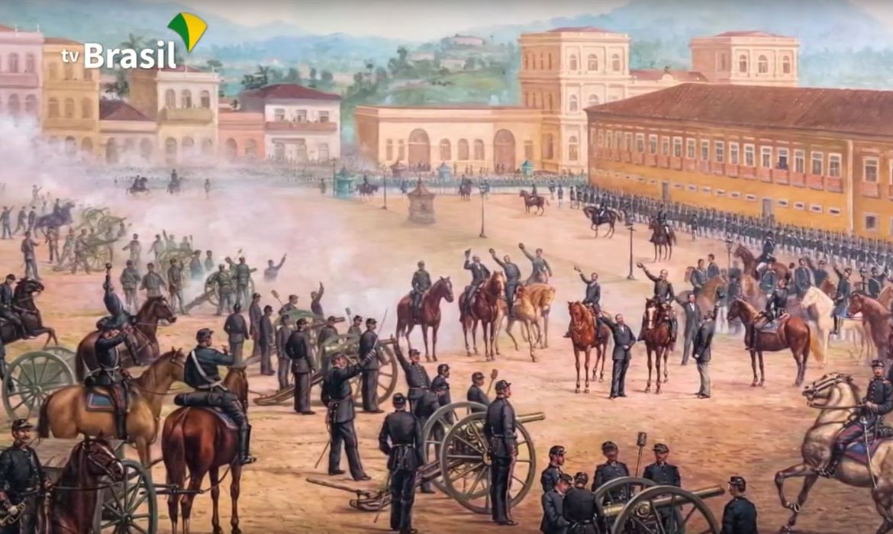
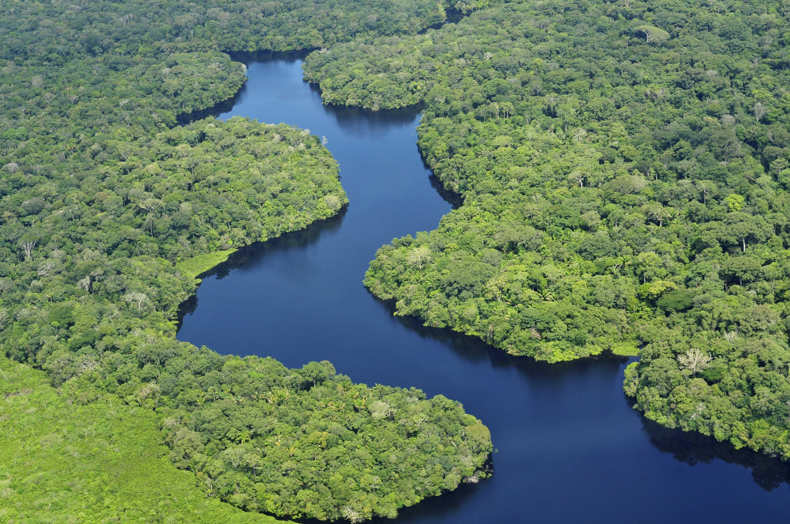
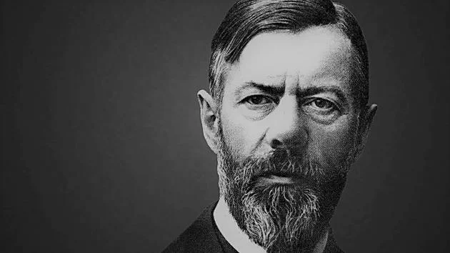

A) 7 de setembro de 1822
B) 21 de abril de 1792
C) 15 de novembro de 1889
D) 12 de outubro de 1492
Qual foi a data da proclamação da república no Brasil?
Pontuação: 0

A) Rio Amazonas
B) Rio Nilo
C) Rio Mississipi
D) Rio Yang tsé
Qual é o rio mais largo do mundo
Pontuação: 0

Qual o maior país do mundo?
Pontuação: 0

A) Émile Durkheim
B) Karl Marx
C) Max Weber
D) Auguste Comte
Qual sociólogo é conhecido por sua teoria sobre a ação social?
Pontuação: 0
Pergunta: Qual das seguintes opções é o passado do verbo "go" em inglês?
Pontuação: 0